Flt. Lt. Jerry John Rawlings
The 1st President of Ghana's 4th Republic
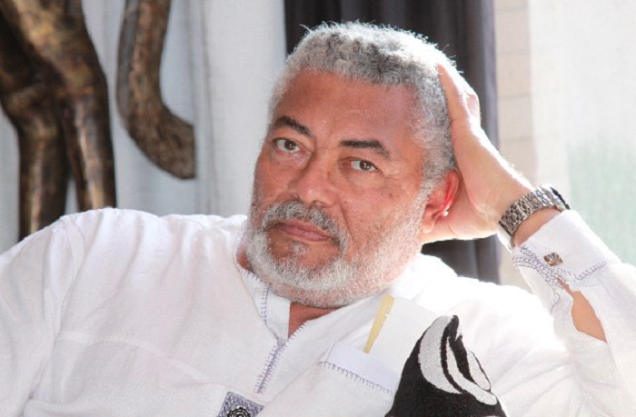
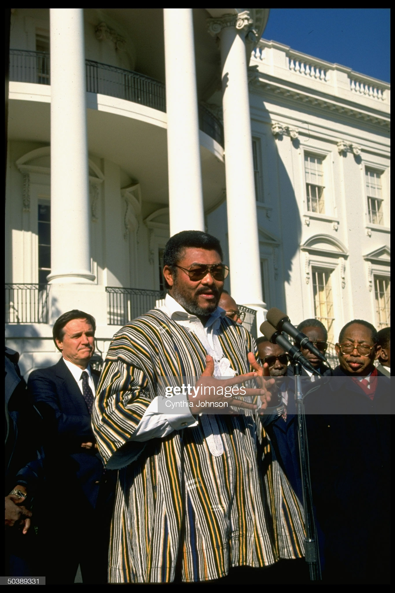
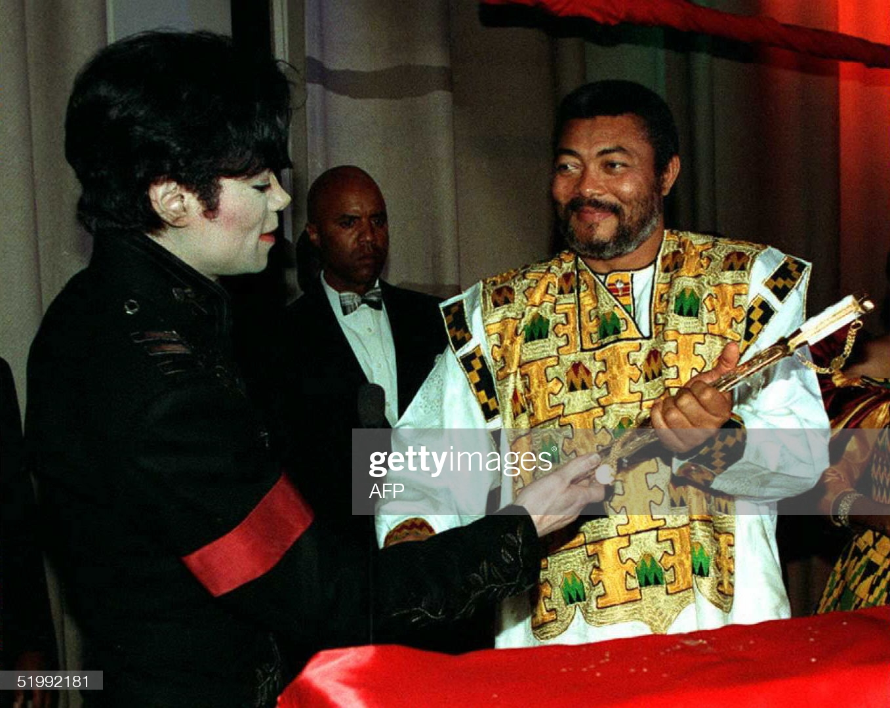
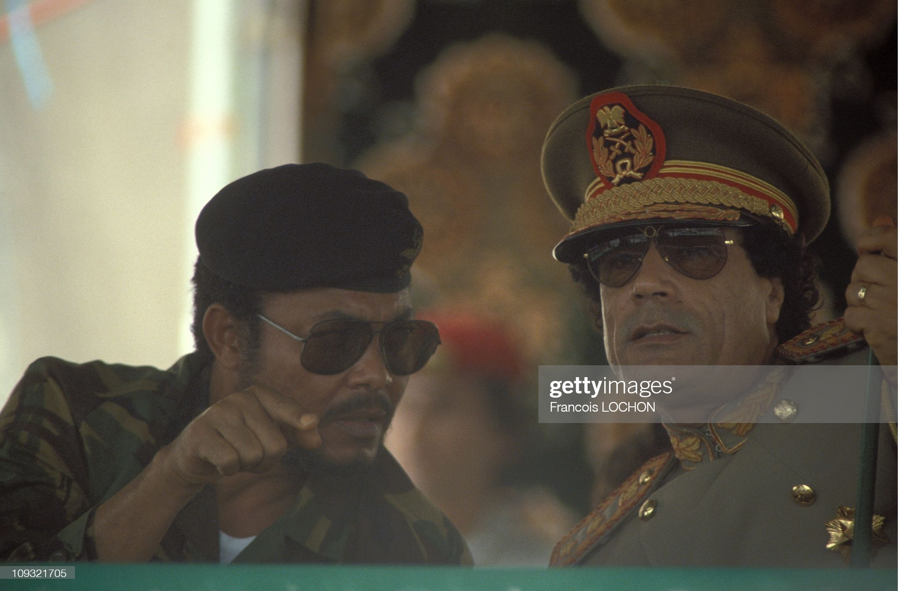
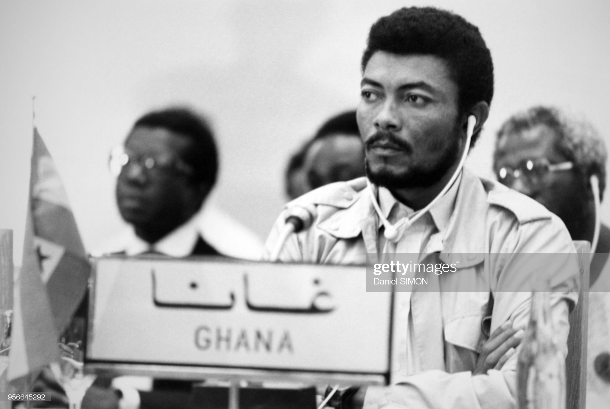
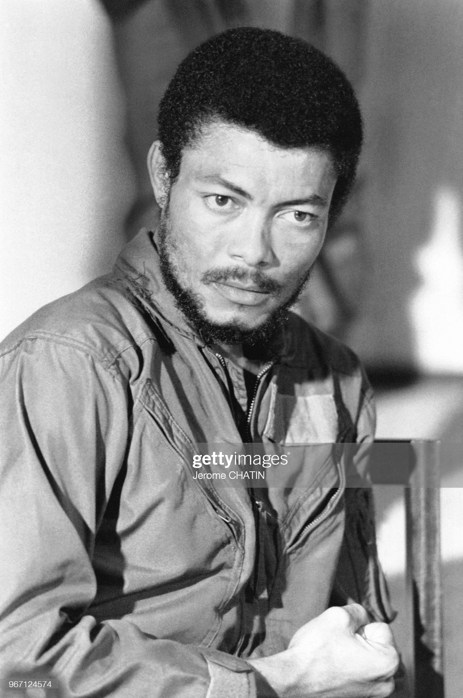
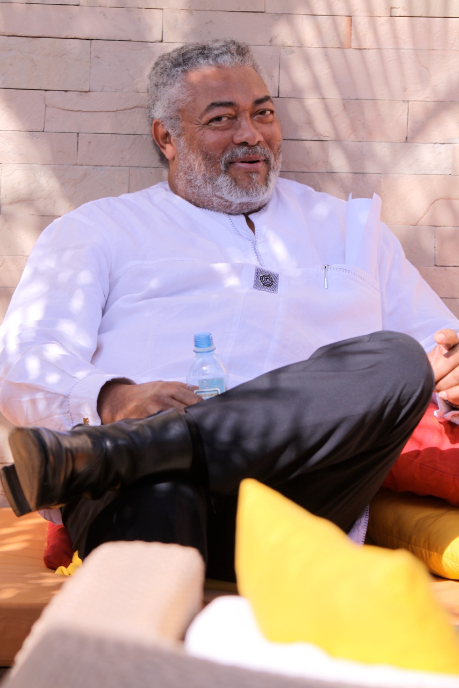
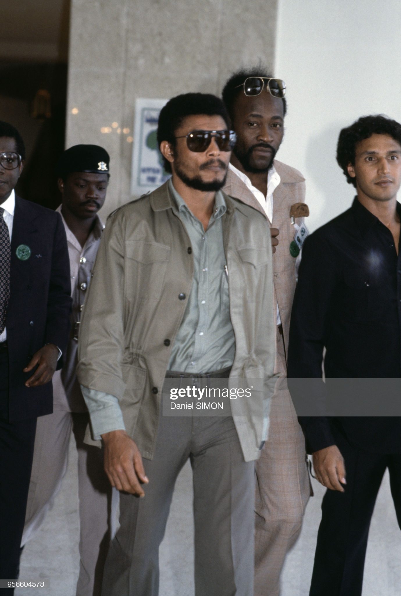
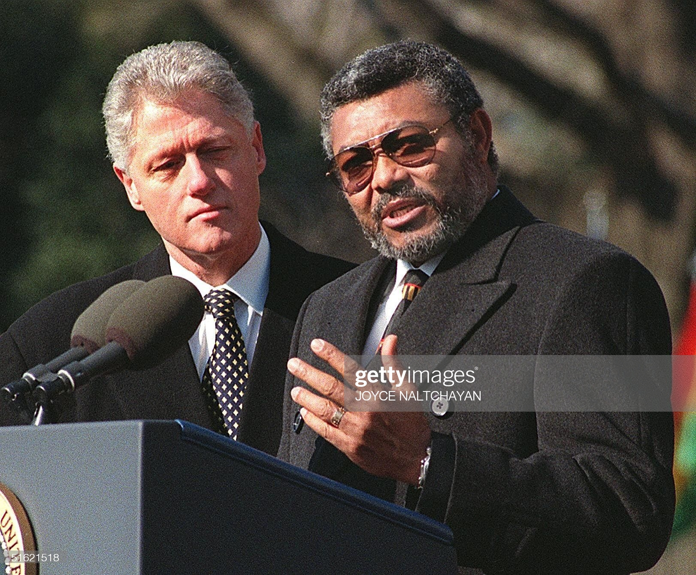
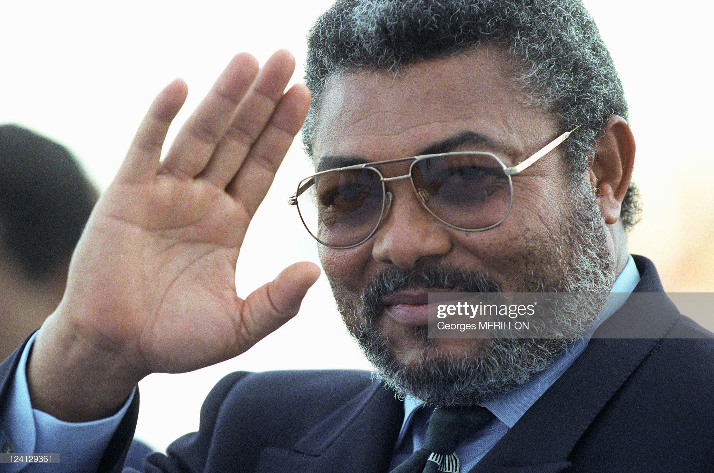
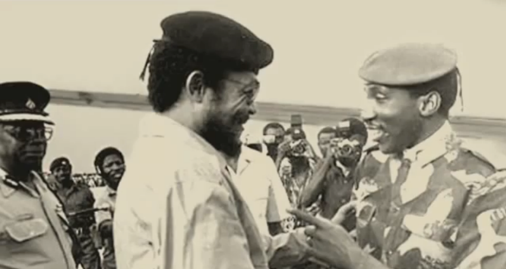
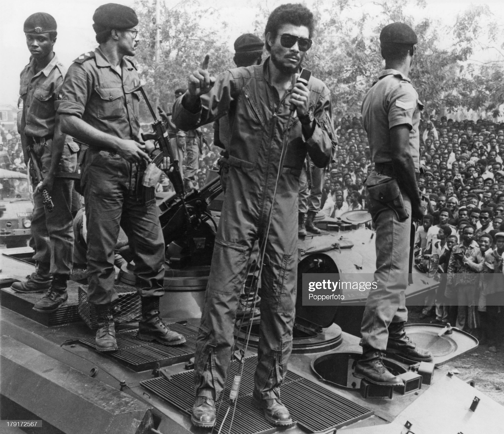
Flt. Lt. J.J Rawlings was head of state from 1982 to 1992 and President from 1993 to 2001. He died on November 12, 2020
A Collection Of Powerful Quotes by The Late Flt. Lt. Jerry John Rawlings
- “The test of religious belief is not in pious platitudes and cautious charity, but in positive and creative action.”
- “Food is a political weapon…Africa’s foremost defence is self-sufficiency in food. Until we attain a substantial measure of freedom from food dependency, we are vulnerable to manipulation by the wealthier nations.”
- “Whatever form of government we adopt as a people to suit our peculiar circumstances, our basic tenet is our common yearning and concern for every individual; for politics, whatever its colour must be an avenue to serve our fellowmen.”
- “I have a right to my identity, do not take away my identity. Christianize me if you want but don't westernize me”
- “We are yet to win our true freedom from the black men who took over from the white men.”
- “The most dangerous mistake of any political force is to forget its roots.”
- “Nothing beats logic than a government that forces itself on its citizens. A genuine conducted electoral process should be without the harsh use of the armed forces, and without fear of intimidation. This is the best way to assure people that their will has prevailed, thus produces a cleansing effect in the society”
- “If we fit learn to be bold enough to restore di value of truth in our society, then we go get justice, without truth we no fit get justice.”
- “I no be expert in law, I no be expert in economies. But I be expert in working on empty stomach while wondering wen and where di next meal go come from. I know wetin e fell like to go to bed with headache, for want of food. ”
- “E get time wey we see di white man, our colonial powers as our enemies but something wey dey worst than an enemy na traitor. Wen we win our freedom, some of di nobel nationalist of our time na dem lead our kontris but as time pass, some of dem become treacherous and betray our aspiration.”
- “We fit vote pipo in and out but wetin we need to do inside dis kontri na to establish a situation where even if na di devil dey rule for Ghana, by virtue of certain procedures and practices, di devil no go fit get away with wetin e want, e go need to do wetin di pipo expect am to do.”
- “I, Rawlings will not turn round and commit the very crime for which another man lost his life.”
- “I would dare you to go and line up some of your finest policemen, some of your finest head of states, some of your finest, what you call it “judges”, make any allegations against me. You included. One of the questions you want to ask. Take me through a chemical interrogation, I will be the one who will pass. I wonder how many of you will pass.”
- “It is not the absence of military interventions, which we seem to have achieved that will restore democracy, freedom, justice and development. What is required is the integrity of leadership and ability to empower the people. Leadership should have confidence in our people and not feel intimidated by empowering them.”
- “Democracy is not realised merely by having a machinery for registering voters and getting them to vote every four years, but also by there being a machinery for identifying the needs of those voters in between the election periods, and monitoring the realization of those needs. ”